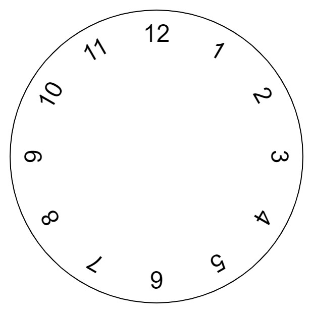
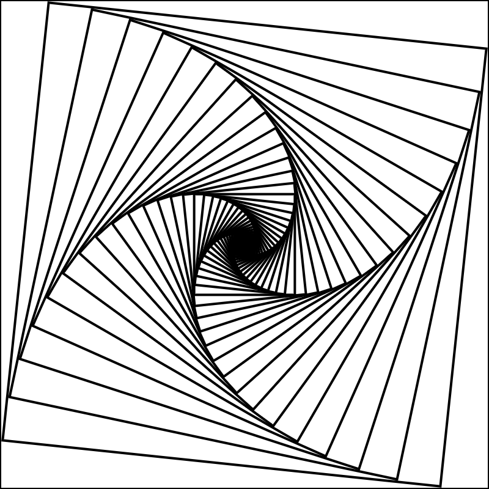
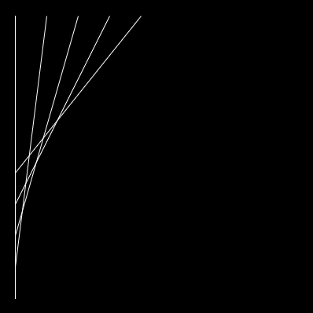
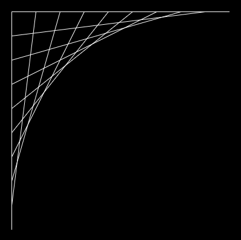
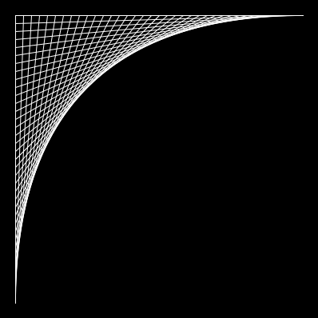
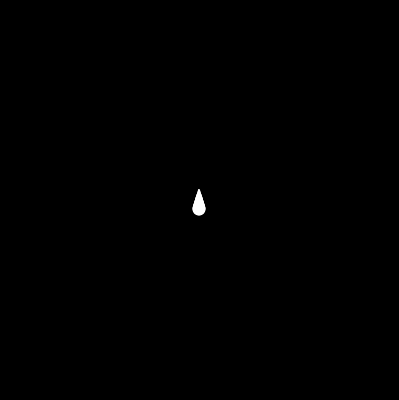
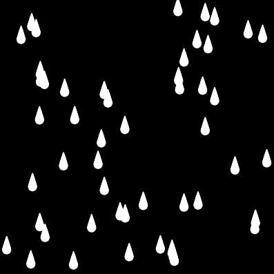

Open the Mouse Rings workspace in CodeHS
The draw function of this sketch should use a loop to draw several circles around mouseX and mouseY.
Without a loop it could be drawn with:
circle(mouseX,mouseY,16); circle(mouseX,mouseY,32); circle(mouseX,mouseY,48); ...
But for full credit you must use a loop that generates a number pattern representing the width of the circle being drawn.

The traditional clock face above is generated using the translate() and rotate() style of programming.
We first use translate() to make the center point our center of rotation, and then we repeatedly draw values at location (0,-120). This is the point 120 pixels above the center, where the 12 would traditionally go. The trick to completing the pattern around the clock is to rotate 30 degrees before drawing the next number at the 'same location'.
You can see a weak attempt at it already started in your code:
rotate(30);
text(1,0,-120);
rotate(30);
text(2,0,-120);
rotate(30);
text(3,0,-120);
This copy-paste is working, but it's not smart enough. Notice that we are repeatedly doing the same two lines of code, but a different number being written each time. Rewrite this portion of the sketch using a for loop to represent the hour being drawn, and loop it enough to draw all 12 numbers. You will not get full credit if you simply continue the copy-paste style of coding.
When you run the sketch, all 12 numbers should be placed evenly around the clock.
Submission:
Copy your solution below.

The Square Spiral design is also accomplished using the translate() and rotate() style of drawing. First a big square is drawn, then we rotate 6 degrees and draw a smaller square. To make things line up properly, each square should be 90% the size of the previous square.
Open the Square Spiral workspace, which has already been started for you
rect(0,0,400);
rotate(6);
rect(0,0,360);
rotate(6);
rect(0,0,324);
rotate(6);
This draws the first 3 squares for you, but it would be exhausting to complete it manually.
Replace that crummy attempt with a for loop whose variable represents the size of each square. The size is should start at a large number, and each time the loop iterates it should be 90% of itself ( size = size * 0.9; or size *= 0.9; ). We want to keep drawing squares until they are really really small, so keep looping while the size is above 1 or 2.
Inside the loop you should only have to draw a single square and rotate once. The loop should handle the rest.
Optional : Once you have the above design generated, modify your code to rotate(frameCount*0.1); instead of 6. This will cause the design to use a slightly different angle each frame. This will bring it to life, making a variety of designs.
In String-Art, using a lot of straight lines can cause a curve to appear. Open the String Art workspace, which has started a design for you.
 |
function setup() {
createCanvas(400, 400);
smooth();
noSmooth();
}
function draw() {
background(0);
stroke(255);
strokeWeight(2);
//Line Pattern
line(20,20,20,380);
line(60,20,20,340);
line(100,20,20,300);
line(140,20,20,260);
line(180,20,20,220);
//red axis
stroke(255,0,0);
line(20,20,20,380);
line(20,20,380,20);
}
|
Mr. Sacco has manually calculated the first few lines in the pattern. There is a specific number pattern that's occurring with each line that's being drawn. The x1 value is increasing, and at the same time the y2 value is decreasing. In order to keep the pattern clean, the value that they are increasing and decreasing is always 40.
You must fix this code so that it uses a for loop instead of the copy-paste-change strategy. Keep it up until it looks like so:

Fixing the Gap
The spacing was originally 40 so that we could see what was going on, but we see the illusion better when the gap is smaller. Modify your code so that the gap is only 20 or 10. If your loop is set up properly you should only have to change one value and run it again to generate a better design.

Submission:
Copy your solution below.
San Diego is rough. You never experience actual weather. This program will generate a rainy day image for you and display it. Open the Rain Simulator where I have given you some structure to start with:
function setup() {
createCanvas(400, 400);
background(0);
noStroke();
fill(255);
raindrop(200,200);
}
function draw() {
//This will remain empty
//All drawing is done in setup
}
function raindrop(dropX, dropY) {
}
Notice that there are a few things happening. First, the draw function is empty because we will be drawing everything to the background in setup, and then never drawing over it. Second, there is a function named raindrop that is meant to draw a single raindrop. It currently does nothing so nothing is drawn.
Drawing a raindrop

At the moment, the setup function is trying to draw a single raindrop at 200,100, but there is nothing being draw. We need to implement the raindrop function so that it draws a single drop. A raindrop is a collection of circles drawn on top of each other. Each circle is a little bit bigger and a little bit lower. The first circle will be at dropX and dropY and have a width of 1. Each sequential circle will have a larger y coordinate and a larger width.
Write a loop in the randrop function that will draw all of the ellipses needed to make a raindrop. There is currently a single raindrop being painted at 200,100 to help test your function. Once you're happy, change the values from 100,200 to 300,120 to make sure that the raindrop is not hard-coded to a specific location.
Drawing Many Random Raindrops

We now have a function named raindrop that will paint a drop for us. Let's use our loops to draw a lot of drops.
In the setup function create a loop that will loop 40 times. It doesn't matter what number pattern the looping variable is going through, as long as it runs 40 times (1 - 40 is a common pattern, so is 0 - 39).
Each of those 40 times we want to draw a random raindrop, so inside the loop you should pick a random x and y (based on the width and height of the canvas) and call raindrop. Hopefully this will cause 40 raindrops to appear on the canvas when you run it.
Submission:
Copy your solution below.